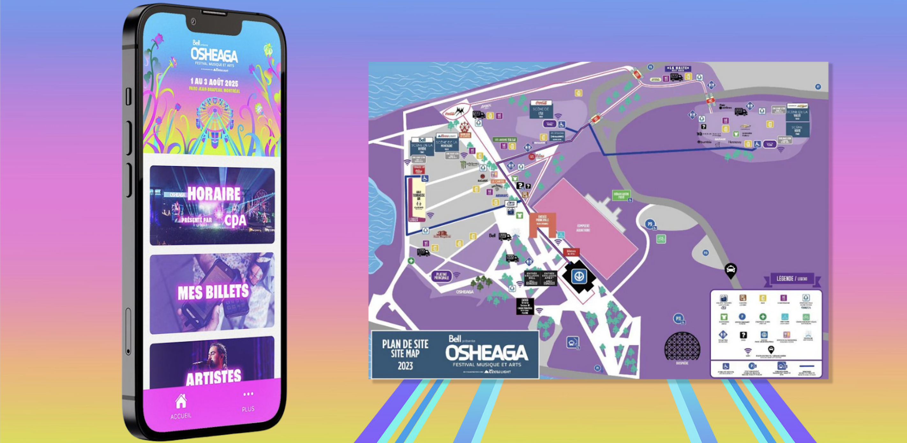

Osheaga —
Festival App &
Product Design
End-to-end product design for Osheaga, Ilesoniq & Lasso — from on-site field research to app UX, contest pages, and content integration. Three festivals. One summer.

Designing for 350k+ people who can't wait.
Festival apps live or die in the first ten minutes of opening weekend. Every map error, every broken schedule — the audience feels it immediately, live, at scale.
Three major festivals ran back-to-back, compressing design, QA, and publishing timelines simultaneously — with no recovery window between events.
App maps needed to reflect real physical conditions — stages, bathrooms, food zones, accessibility — which couldn't be produced accurately without ground-truth on-site data.
Apps had to serve tens of thousands of concurrent users: outdoors, poor signal, mobile, direct sunlight. Every decision had to be optimized for those real-world conditions.
All content had to be accurate on day one — no room for post-launch corrections during a live event in front of a massive, real-time audience.


I went to the festival. As research.
The most valuable design work wasn't in Figma — it was physically walking the grounds with a structured mapping template, capturing data no remote designer could produce accurately.
On-Site Data Collection — Osheaga · Ilesoniq · Lasso
From the grounds up.
Every point of interest was logged on-site, verified against real physical conditions, and structured into datasets delivered to the dev team for integration into the live app map layer. This process became the repeatable framework used across all three festivals.


From field notes to finished product.
Every design decision was grounded in what real festival-goers needed — fast, outdoor, on poor signal.
App Navigation & Interactive Map Design
Designed core app sections — artist schedule views, interactive stage maps, and navigation flows optimized for first-time and returning festival-goers, all informed by on-site field data.
Artist Schedules & Lineup Integration
Integrated artist lineup data into the app CMS, ensuring schedule accuracy across all stages and set times — one of the most time-sensitive sections of any festival app.
Homepage & Hero Redesigns
Redesigned homepage layouts and hero sections for each festival's web presence, maintaining brand consistency while adapting to each event's distinct visual identity.
Contest Pages — Club Bell
Designed 3 large-scale contest pages across all three festivals — entry flows, prize displays, and legal copy. Combined: 45K+ entries.
Sustainability & Info Pages
Rebuilt info pages with improved structure so users could find key information fast — optimized for real outdoor, high-distraction conditions.
Tools & Stack
 GA4
GA4
 Google Sheets
Google Sheets

Numbers that hit.
Critical map errors during any of the three live festival weekends — all field-verified location data was accurate from day one.
Combined contest entries across the Osheaga, Ilesoniq, and Lasso Club Bell contest pages.
Increase in digital engagement across festival platforms following homepage redesigns and content restructuring.
The on-site data collection framework I developed was reused unchanged across all three festivals — the repeatable standard for future events.

What this project taught me.
Go where your users are
Being physically present at the festivals was the most valuable research method. No remote design work could have produced the same map accuracy. Good research means going to the source.
Design for the real moment
Festival UX is a distinct challenge: outdoors, distracted, poor signal, moving crowds. Every decision had to optimize for real conditions — not ideal lab conditions.
Speed at quality is a learnable skill
Running three simultaneous product cycles taught me how to context-switch at pace without dropping quality — a skill that transfers directly to any fast-moving product team.